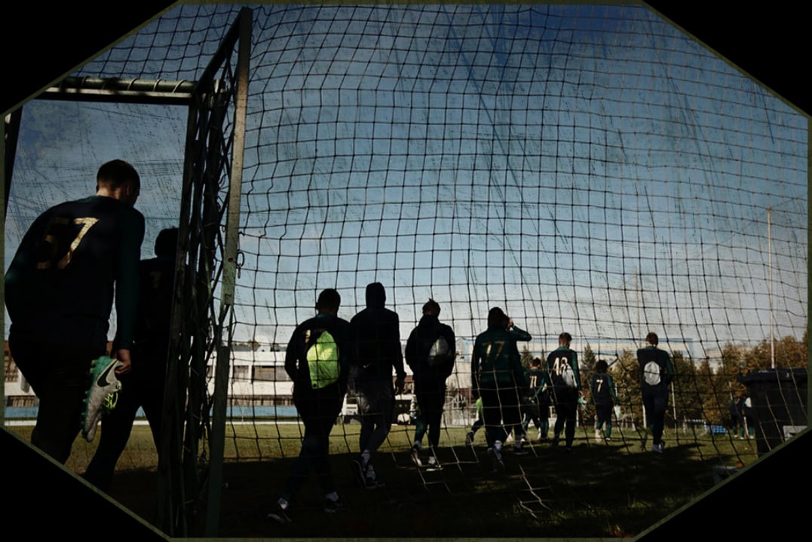
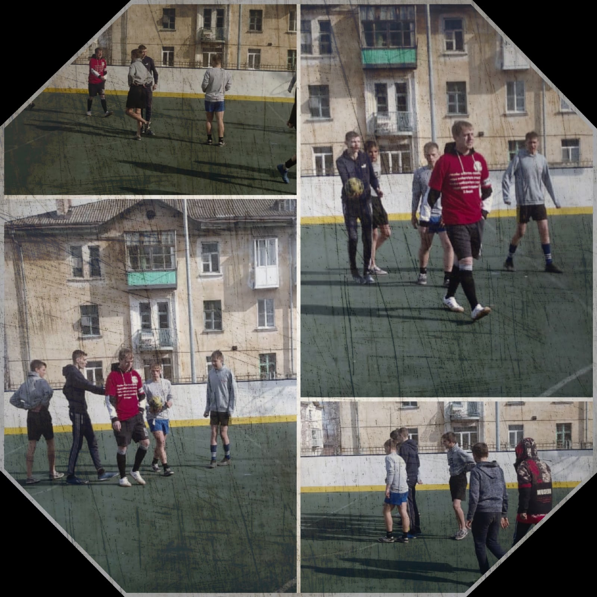
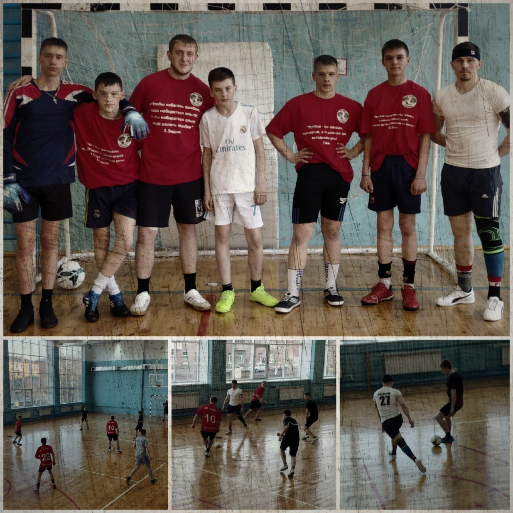
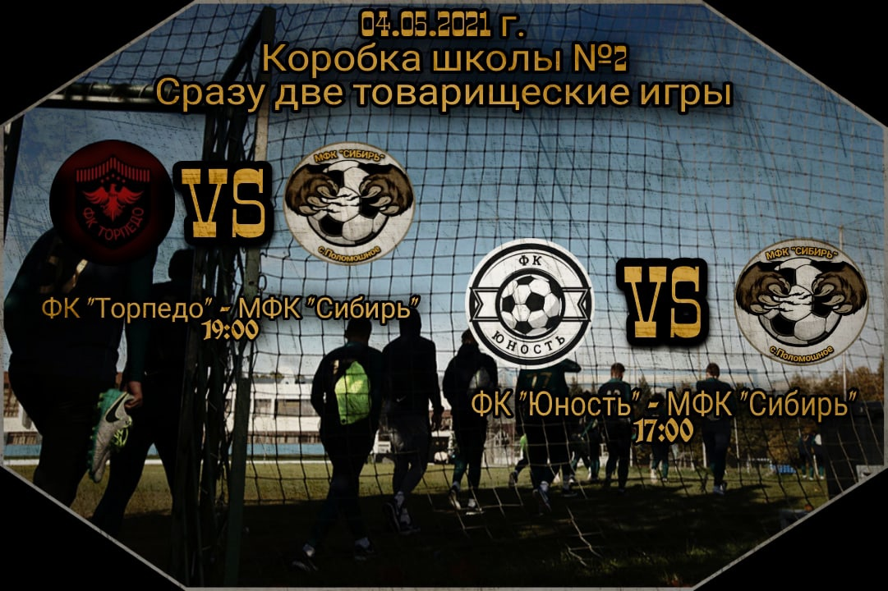
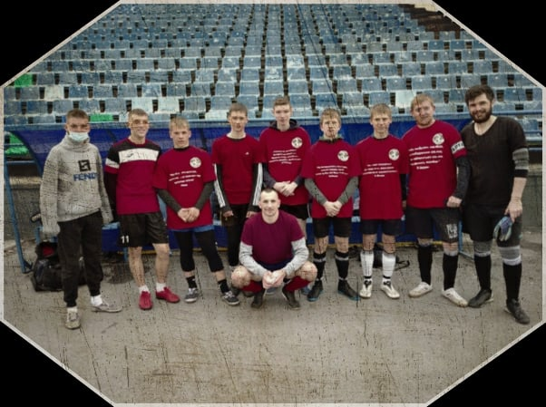
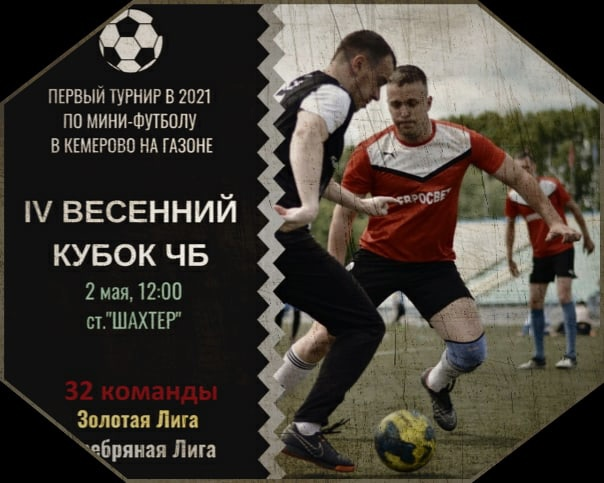

Новости
 Обзор матча ФК «ОЛИМПИЕЦ» - МФК «СИБИРЬ» Обзор матча ФК «ЮНОСТЬ» - МФК «СИБИРЬ»
 Обзор матча ФК «ПЛЮС» - МФК «СИБИРЬ»
 Открываем новую страничку нашей истории после трудного турнира в г.Кемерово и уже 4.05 проводим сразу два товарищеских поединка!
 Вот и завершился турнир в г.Кемерово
 Турнир в г.Кемерово